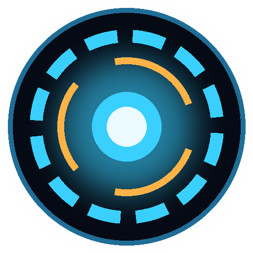

| Praten | Houd 🎙 Houd vast en praat ingedrukt (of F2), praat, en laat los. |
|---|---|
| Typen | Typ onderin en druk op Enter. |
| Stil zijn | Knop ■ Stil of Esc: hij stopt meteen met praten. |
| Opnieuw beginnen | Knop Nieuw gesprek (of Ctrl+N). |
| De kern | Blauw = klaar of praat · Oranje = denkt na · Groen = luistert · Paars = zoekt online |
| Tijd en datum | "Hoe laat is het?" · "Welke dag is het?" |
|---|---|
| Timer | "Zet een timer van 10 minuten" · "Zet een wekker over een kwartier" |
| Onthouden | "Onthoud dat mijn hond Max heet" · "Wat heb je onthouden?" · "Vergeet Max" · "Vergeet alles" |
| Online zoeken | "Zoek op internet naar ..." of vraag gewoon iets actueels: "Wat voor weer wordt het morgen?". Hij zoekt zelf en zet de bronnen als links eronder. |
| Website openen | "Open YouTube" · "Ga naar nos.nl" |
| Gewone vragen | Alles wat je wilt weten of bespreken. Hij antwoordt kort, want hij spreekt het uit. |
| Ochtendoverzicht | "Goedemorgen" · "Wat staat er vandaag?". Hij vertelt het weer (ook storm, regen en windstoten), je afspraken uit DraveAgenda en wat je voor vandaag hebt genoteerd. Bij de eerste start van de dag (tussen 5 en 12 uur) doet hij dit vanzelf; uit te zetten bij Instellingen. |
|---|---|
| Plaats voor het weer | "Mijn plaats is Amsterdam" · "Ik woon in Utrecht" |
| Noteren | "Noteer morgen brood halen" · "Schrijf op: tandarts bellen". Staat er morgen in, dan hoor je het de volgende ochtend terug. |
| Zoeken in je geheugen | "Wat weet je over de tandarts?" · "Wat heb ik gezegd over de vakantie?". Hij zoekt in je notities, feiten en eerdere gesprekken. |
| Laatjes (nieuw in 1.2) | Wat je hem laat onthouden, legt hij in een laatje per onderwerp: Mensen, Dieren, Interesses, Eten, Werk, Thuis, Afspraken of Overig. Hij zegt erbij in welk laatje. Bij een vraag pakt hij eerst het juiste laatje. "Wat weet je over mij?" geeft alles per laatje. |
| Geheugenmap | "Open mijn geheugen" of de knop bij Instellingen. Alles staat in gewone tekstbestanden die je zelf mag lezen en aanpassen: de map laatjes (wat je hem laat onthouden, per onderwerp), notities en gesprekken (per dag). Gesprekken bewaren kun je uitzetten bij Instellingen. |
| Programma starten | "Open Kladblok" · "Start DraveStudio" · "Open Edge" |
|---|---|
| Map openen | "Open mijn downloads" · bureaublad, documenten, afbeeldingen, muziek, video's |
| Programma sluiten | "Sluit Chrome" ⚠️ vraagt eerst |
| Geluid en muziek | "Geluid harder" · "Zachter" · "Demp" · "Pauzeer de muziek" · "Volgende nummer" · "Vorige nummer" |
| Pc-gezondheid | "Hoe gaat het met de pc?" · "Status van mijn pc" · "Hoeveel ruimte heb ik nog?" |
| Bestand zoeken | "Zoek het bestand spelgids", daarna "Open nummer 2" (of klik op de link) |
| Schermafbeelding | "Maak een screenshot": komt in Afbeeldingen\DraveJavis |
| Vergrendelen | "Vergrendel de pc" |
| Afsluiten / herstarten | "Sluit de pc af" · "Herstart de computer" ⚠️ vraagt eerst, wacht dan 1 minuut · "Annuleer afsluiten" |
| Opruimen | "Ruim de tijdelijke bestanden op" · "Leeg de prullenbak" ⚠️ vraagt eerst. Alleen tijdelijke bestanden ouder dan een dag. |
Veilig: bij ⚠️ vraagt hij "Weet je het zeker?". Zeg of typ ja of nee, of klik op de knoppen. Hij voert alleen acties uit deze lijst uit, en systeemonderdelen van Windows sluit hij nooit.
| "Geen taalmodel bereikbaar" | Staat de eigen motor klaar (Instellingen → Motor)? Is de download afgebroken, klik dan nog eens op Motor downloaden...: hij gaat verder waar hij was. Gebruik je de Llama-app: start die en laad een model. |
|---|---|
| "Eigen motor startte niet" | Kijk in motor.log in de motor-map. Op een oudere videokaart probeert hij het vanzelf nog eens met minder geheugen. |
| Hij verstaat me niet | Praat iets dichter bij de microfoon en laat pas los als je klaar bent. Bij Instellingen kun je spraakherkenning small kiezen: preciezer, maar trager. |
| Geen stem | Kijk onderaan bij "stem". De eerste keer moet hij downloaden. Staat "Antwoorden hardop uitspreken" aan? |
| Hij vindt een programma niet | Zeg de naam zoals die in het Startmenu staat, of voeg de map toe bij Eigen programma's. |
Goed om te weten: DraveJavis gebruikt een klein lokaal taalmodel. Dat is privé en gratis, maar kan zich bij moeilijke vragen vergissen. Bij vragen over de pc meet hij eerst echt, zodat hij geen cijfers verzint.